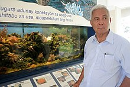
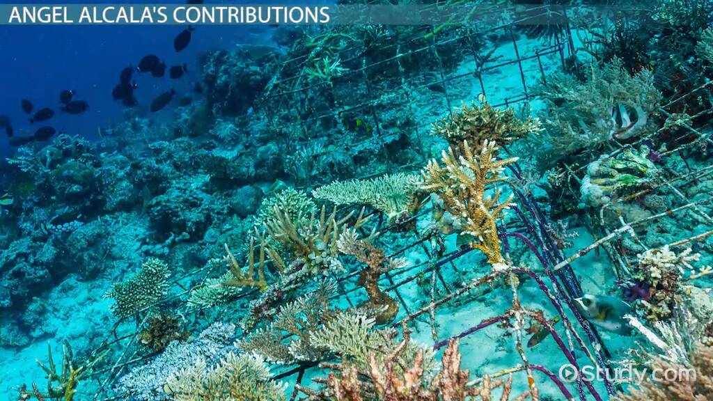

Angel Chua Alcala
Year Conferred: 1992
Field of Specialization: Marine Biogeography & Marine Biology
Status: Alive
Angel Alcala was born on the first of March in 1929. His mother was Crescenciana Chua, and his father was Porfirio Alcala. The family lived in Caliling, a coastal village in Cauayan in the province of Negros Occidental in the Philippines. Cauayan is known for its sandy beaches and pristine waters. This is where Angel Alcala’s awareness and love for marine life began. His family lived in a humble and rural area, being supported by the bounty of the sea.
Educational Background:
- Silliman University (1951), Biological Studies - Magna Cum Laude
In 1948 Alcala began an undergraduate degree in biological studies at the private Silliman University, in Dumaguete in the adjoining Negros Oriental province. Because of his promising potential and evident intelligence, he was accepted to be a student of the University of the Philippines’s College of Medicine in Manila.
Academic Researches
Cameron D. Siler, Arvin C. Diesmos, Angel C. Alcala, Rafe M. Brown, (2011) Phylogeny of Philippine Slender skinks (Scincidae : Brachymeles) reveals underestimated species diversity, complex biogeographical relationships, and cryptic of lineage diversification Molecular Phylogenetics and Evolution Volume 59, No. 1
GARRY R. RUSS, ANGEL C. ALCALA, ALAN T. WHITE, (2010) Effective of Marine Protected Areas in the Philippines for Biodiversity Conservation Conservation Biology Volume 24, No. 2
Garry R. Russ, Abner A. Bucol, Angel C. Alcala, (2010) Shortcuts for Marine conservation Planning: the effectiveness of socioeconomic data surrogates Biological Conservation Volume 143, No. 5
Garry R. Russ, Angel C. Alcala, (2010) Decadal-scale rebuilding of predator biomass in Philippine marine reserves Oecologia Volume 163, No. 4
Garry Russ, Angel Alcala, (2010) Enhanced Biodiversity beyond Marine reserve boundaries : the cup spillith-over Ecological Applications
Garry R. Russ, Abner A. Bucol, Angel C. Alcala, (2010) Incorporating local tenure in the systematic design of marine protected areas networks: Designing MPA networks with local tenure Conservation Letters
R. S. Steneck, C. B. Paris, S. N. Arnold, M. C. Ablan-Lagman, A. C. Alcala, M. J. Butler, L. J. McCook, G. R. Russ, P. F. Sale, (2009) Thinking and Managing outside the box: coalescing connectivity networks to build region-wide resilience in coral reefs ecosystems Coral Reefs Volume 28, No. 2
Rafe M. Brown, Cameron D. Siler, Arvin C. Diesmos, Angel C. Alcala, (2009) Philippine Frogs of the Genus Leptobrachium (Anura; Megophryidae):Phylogeny-based Species Delimitation, Taxonomic Review , and Descriptions of Three New Species Herpetological Monographs Volume 23, No. 1
Alcala, A.C., Ingles, J.A., Bucol, A.A., (2009) Review of the biodiversity of Southern Philippine Seas The Philippine Scientist Volume 45
Cameron D. Siler, Angel C. Alcala, Arvin C. Diesmos, Rafe M. Brown, Michael Harvey, (2009) A New Species of Limestone-Forest Frog, Genus Platymantis (Amphibia: Anura: Ceratobatrachidae) from Eastern Samar Island, Philippines Herpetologica Volume 65, No. 1
Arvin C. Diesmos, Rafe M. Brown, Angel C. Alcala, Rogelio V. Sison, (2008) Status and Distribution on Nonmarine Turtles of the Philippines Chelonian Conservation and Biology Volume 7, No. 2
Cameron D. Siler, Charles W. Linkem, Arvin C. Diesmos, Angel C. Alcala, (2007) A NEW SPECIES OF PLATYMANTIS (AMPHIBIA: ANURA: RANIDAE) FROM PANAY ISLAND, PHILIPPINES Herpetologica Volume 63, No. 3
Angel C. Alcala, Garry R. Russ, (2006) No-take Marine Reserves and Reef Fisheries Management in the Philippines: A New People Power Revolution
A Picture of Alcala and his Work
Dr. Angel Alcala was recognized for his contributions in building sanctuaries and promoting biodiversity in the aquatic ecosystems in the Philippines. His biological contributions to the environment, his passion for marine life especially those in the tropical waters of his country’s ecosystems have made him a renowned hero for natural sciences in the Philippines. He spent over 30 years studying marine biology, conservation biology, terrestrial ecology and is behind the invention of artificial coral reefs for fisheries in Southeast Asia. He was responsible for restoring and preserving the areas with predominant wild, large predatory fish populations near a small marine sanctuary called Sumilon Marine Reserve at Apo Island in the Philippines. Angel Alcala’s conservation efforts accompanied by his research in oceanic and land management helped stabilize the retention of once-endangered species in the Sumilon Island and Apo Island marine reserves.
Achievements
In 1959, Angel Alcala earned the Fulbright-Smith Mundt master's fellowship in Stanford University's biology department.
In 1963, Alcala was awarded the Guggenheim Fellowship for Natural Sciences in the category for Organismal Biology & Ecology.
In 1992, the Ramon Magsaysay Award Foundation awarded Alcala the Ramon Magsaysay Award and acknowledged him for pioneering scientific leadership in restoring and conserving the coral reefs of the Philippines.
In 1994, he received the Field Museum Founders' Council Award of Merit for his contributions to environmental biology.
In 1999, he was awarded the Pew Fellowship in Marine Conservation for his continued, exceptional work in marine conservation.
In 2014, President Benigno Simeon Aquino III Proclamation No. 782, naming Alcala a National Scientist of the Philippines in recognition of his research on ecology and diversity of Philippine amphibians and reptiles, marine biodiversity, and marine-protected areas.
In 2017, Alcala was named an ASEAN Biodiversity Hero. He was also previously the Department of Environment and Natural Resources (DENR) Secretary in the Philippines.
In 2018, he was named a member of the Fulbright Philippines Hall of Fame.
In November 2018, he was awarded Oceans Legend by PEMSEA during the East Asian Seas (EAS) Congress in Iloilo City.
Findings

Biorock Artifical Reef for Growing Corals by Alcala
Along with his many other accomplishments, Angel Alcala's work has led to the discovery of 50 new species of reptiles and amphibians. In other words, more than 10 percent of all reptiles and amphibians in the Philippines are known today because of Alcala's work. This fieldwork began while he was still a student and ultimately built a stronger foundation to jumpstart conservation programs within the Philippines.